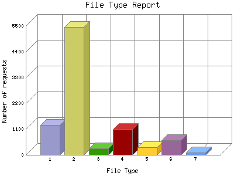

Analog 5.24
Analog 5.24 Report Magic for Analog 2.13
Report Magic for Analog 2.13The File Type Report identifies the type of information that is requested from the web site. GIF and JPG are the two types of graphic (image) files that are most commonly supported by web browsers. HTML (sometimes abbreviated HTM), ASP, and [directories] all represent actual pages. The number of image requests will almost always outnumber page requests as one page may contain several images.
This report shows results with at least 0.100000 percent of the total bytes. This report is sorted by amount of bytes transferred.

| File Type | Number of requests | Percentage of the bytes | |
|---|---|---|---|
| 1. | .cfm [Cold Fusion] | 1,264 | 82.14% |
| 2. | .gif [GIF graphics] | 5,453 | 6.51% |
| 3. | .jpg [JPEG graphics] | 280 | 5.74% |
| 4. | .html [Hypertext Markup Language] | 1,104 | 2.41% |
| 5. | .js [JavaScript code] | 324 | 1.73% |
| 6. | .css [Cascading Style Sheets] | 626 | 1.6% |
| 7. | [directories] | 111 | 0.14% |
| [not listed: 7] | 176 | 0.24% | |
This report was generated on February 18, 2007 02:24.
Report time frame February 4, 2007 20:17 to February 17, 2007 22:58.
| Web statistics report produced by: | |
| Analog 5.24 | Report Magic for Analog 2.13 |